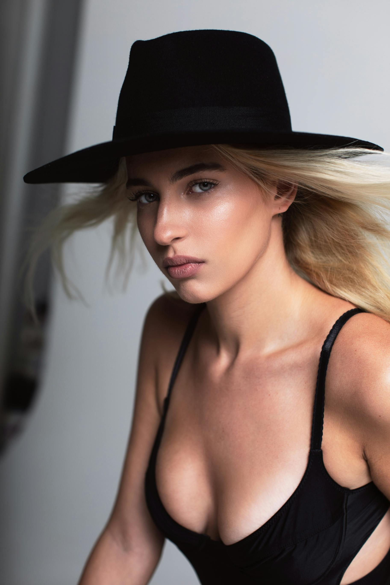
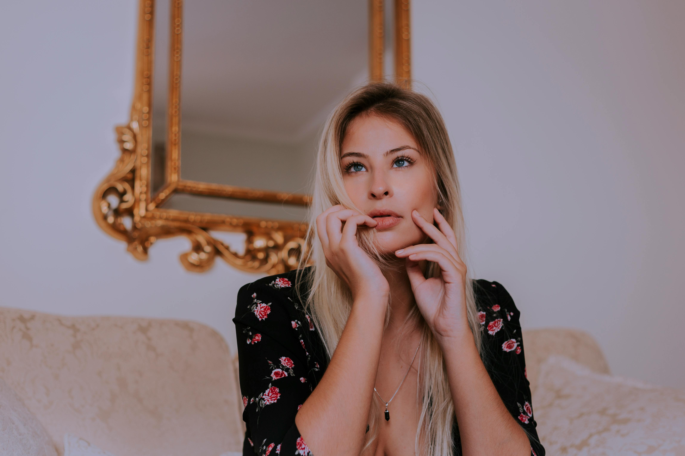
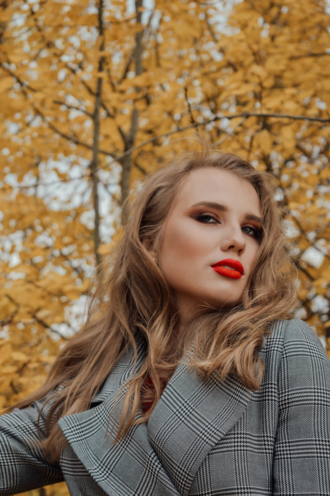

Bella Angel

Será el duodécimo duelo entre los dos jugadores, con siete victorias del español, que encadena cuatro victorias, la última en al final del Masters 1.000 de Roma de hace unas semanas. Sinner, el primer finalista en París desde Adriano Panetta en 1976

ha impuesto un tenis arrollador, no ha perdido un set, solo ha dejado escapar 53 juegos y apenas ha pasado en pista menos de trece horas en pista. Encadena 20 victorias en Grand Slam y esta temporada solo ha perdido un partido.

La previa
El tenista transalpino impuso el ímpetu de sus 23 años al serbio Novak Djokovic, 6-4, en la segunda semifinal. Mientras, Alcaraz tuvo más problemas para derrotar al italiano Lorenzo Musetti, 4-6, que tras anotarse el primer set y pelear el segundo, sintió problemas físicos que le impidieron acabar el partido.

La previa
El tenista transalpino impuso el ímpetu de sus 23 años al serbio Novak Djokovic, 6-4, en la segunda semifinal. Mientras, Alcaraz tuvo más problemas para derrotar al italiano Lorenzo Musetti, 4-6, que tras anotarse el primer set y pelear el segundo, sintió problemas físicos que le impidieron acabar el partido.

La previa
El tenista transalpino impuso el ímpetu de sus 23 años al serbio Novak Djokovic, 6-4, en la segunda semifinal. Mientras, Alcaraz tuvo más problemas para derrotar al italiano Lorenzo Musetti, 4-6, que tras anotarse el primer set y pelear el segundo, sintió problemas físicos que le impidieron acabar el partido.
El nivel de Sinner es tal que se antoja que solo el español Alcaraz puede amenazarlo. El número 2 del mundo comparecía en su semifinal tras haber mostrado un gran nivel contra el estadounidense Tommy Paul. Pero ante el italiano Musetti, el único que este año le ha hecho sombra en número de victorias sobre tierra batida, no tuvo una papeleta fácil.